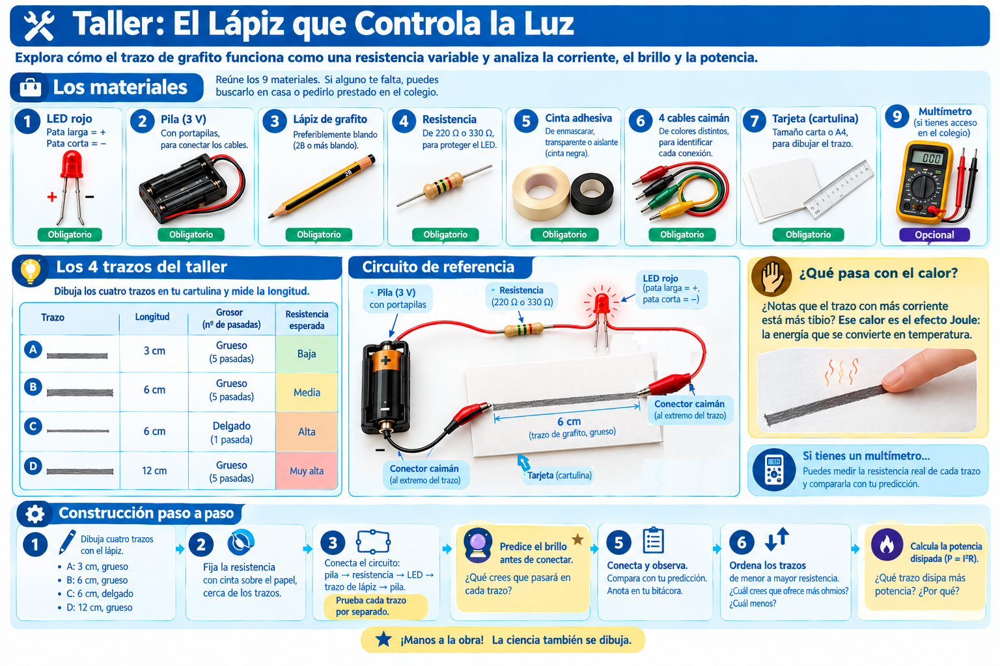
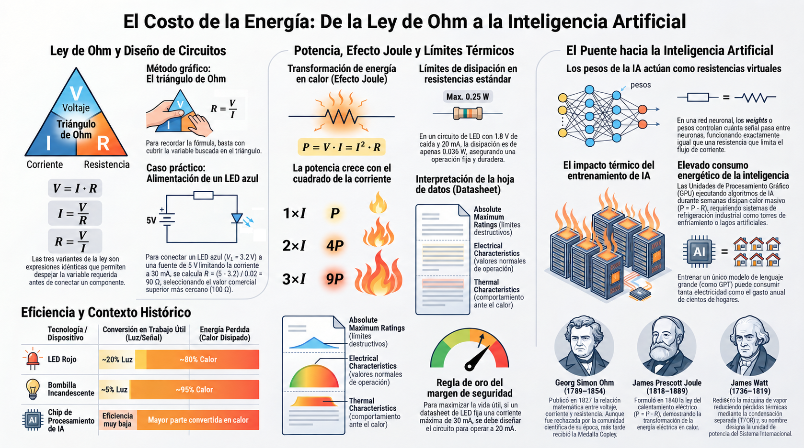

🟢 El costo de la energía
🧮 La ley de Ohm como herramienta de diseño
La ley de Ohm también es una herramienta de diseño. Antes de conectar un componente, los ingenieros calculan la resistencia que necesitan para que el circuito funcione sin dañarse.
Las tres formas son la misma ley, solo despejada de manera distinta. El triángulo de Ohm te ayuda a recordarlas:

💡 Ejemplo de diseño: quieres alimentar un LED azul (Vf ≈ 3.2V) con una fuente de 5V, limitando la corriente a 20 mA. La resistencia necesita manejar la diferencia de voltaje:
$$R = \frac{V_{\text{fuente}} - V_f}{I} = \frac{5 - 3.2}{0.02} = 90\ \Omega$$
El valor comercial más cercano por encima es 100 Ω. Ese es el que usarías.
🔥 Potencia y disipación
La corriente que circula por una resistencia no desaparece: se convierte en calor. Ese fenómeno se llama efecto Joule y es la razón por la que algunos componentes se calientan. La potencia disipada se calcula con dos fórmulas equivalentes:
🔎 ¿Por qué las dos fórmulas dan lo mismo?
No son dos fórmulas distintas: son la misma expresión escrita de dos maneras. Podemos demostrarlo con álgebra simple:
- Partimos de la primera fórmula: P = V · I
- Sustituimos V por su equivalente según la ley de Ohm: V = I · R
- Reemplazamos: P = (I · R) · I = I² · R
Las dos versiones son idénticas. La primera es útil cuando conoces el voltaje; la segunda cuando conoces la resistencia. Los ingenieros usan la que les resulte más cómoda en cada caso.
🔎 Principio de conservación de la energía
La energía que entrega la fuente no se crea ni se destruye: se transforma. En un circuito, esa energía se reparte entre los componentes. Parte se convierte en luz (en el LED), parte en calor (en la resistencia). La suma de las energías transformadas por cada componente es igual a la energía que entregó la fuente.
Este principio es el que permite calcular la resistencia que necesita cada componente: sabemos cuánto voltaje debe "quedarse" con cada uno porque la suma tiene que cuadrar con el voltaje total de la fuente.
📊 Ejemplo numérico
Volvamos al LED del ejemplo anterior. La resistencia de 100 Ω tiene una caída de voltaje de 1.8V (5V − 3.2V) y pasa una corriente de 20 mA:
Las resistencias comerciales estándar soportan 0.25 W (un cuarto de vatio). Como 0.036 W es mucho menor, esta resistencia trabajará fría y durará años.
⚠️ ¿Cuándo se quema una resistencia? Cuando la potencia que debe disipar excede su límite. Con la fórmula $P = I^2 R$ se ve claramente por qué: la potencia crece con el cuadrado de la corriente. Si duplicas la corriente, la potencia se cuadruplica. Por eso los ingenieros prefieren siempre corrientes bajas cuando diseñan circuitos de potencia.
📄 La Hoja de Datos (datasheet): los límites del componente
Cada componente electrónico viene acompañado de un documento llamado hoja de datos (en inglés, datasheet). Es el manual técnico del componente y contiene los valores que nunca debes exceder.
En una hoja de datos típica encontrarás tres secciones críticas:
- Valores máximos absolutos (Absolute Maximum Ratings): los valores máximos absolutos (voltaje, corriente, temperatura). Superarlos destruye el componente.
- Características eléctricas (Electrical Characteristics): las características normales de funcionamiento: voltaje directo del LED, corriente recomendada, resistencia interna.
- Características térmicas (Thermal Characteristics): cómo se comporta el componente respecto al calor: temperatura máxima de operación, resistencia térmica, necesidad de disipadores.
📊 Cómo interpretar un datasheet de LED rojo
Imagina que abres la hoja de datos de un LED rojo. Encuentras esta tabla:
| Parámetro | Valor | Significado |
|---|---|---|
| Vf (voltaje directo) | 2.0 V | Voltaje que necesita para encender |
| If (corriente directa) | 20 mA | Corriente recomendada para brillar |
| Imax (corriente máxima) | 30 mA | Límite que nunca debes exceder |
| Tmax (temperatura máxima) | 85 °C | Temperatura máxima de operación segura |
Con estos cuatro datos, puedes calcular la resistencia que necesita el LED para cualquier fuente de voltaje. Y puedes verificar que la corriente que vas a hacer pasar por él esté por debajo de Imax.
🎯 Regla de oro del ingeniero: diseña siempre con un margen de seguridad. Si el datasheet dice que la corriente máxima es 30 mA, diseña para 20 mA. Así el componente trabajará cómodo y durará más.
🔍 ¿Cómo encontrar una hoja de datos?
- Identifica el número de parte del componente (por ejemplo, "LED rojo 5mm" o "resistencia 220Ω 1/4W").
-
Busca en internet:
[número de parte] datasheet PDF. - Descarga el PDF desde el sitio del fabricante (Vishay, Fairchild, Texas Instruments, etc.).
- Lee especialmente la sección Absolute Maximum Ratings, donde están los valores que nunca debes exceder.
🧠 Los pesos de la IA: resistencias virtuales
En una red neuronal, la información viaja de una neurona a otra a través de conexiones con diferentes "fuerzas". A esas fuerzas se les llama pesos (en inglés, weights). Un peso decide cuánta señal pasa de una neurona a otra.
¿Te suena familiar? Un peso hace exactamente lo mismo que una resistencia: controla cuánto flujo pasa. Un peso alto deja pasar mucha señal; un peso bajo la bloquea casi por completo.
🎯 La conexión: la ley de Ohm describe cómo se comporta la electricidad en un cable. Los pesos describen cómo se comporta la información en una red neuronal. Matemáticamente, las dos relaciones son muy parecidas: hay una entrada, un factor de control, y una salida.
Cuando un ingeniero de IA "entrena" un modelo, está ajustando millones de pesos hasta que la red responde correctamente. Es como si ajustara millones de resistencias virtuales al mismo tiempo.
🔥 El costo energético de la inteligencia
Toda esta información viaja dentro de chips que consumen energía. Cuando se entrena un modelo de IA grande, Las unidades de procesamiento gráfico (GPU) trabajan a máxima capacidad durante semanas o meses. La potencia disipada es enorme, y la mayor parte se convierte en calor.
Los centros de datos que entrenan modelos como GPT necesitan sistemas de refrigeración industrial: ventiladores gigantes, torres de enfriamiento, a veces incluso lagos artificiales. Todo eso se hace para mantener los chips dentro de temperaturas seguras.
🔎 Eficiencia: la relación entre lo útil y lo perdido
No toda la energía que consume un sistema se convierte en trabajo útil. La eficiencia es la fracción de la energía total que efectivamente realiza el trabajo deseado.
- Un LED rojo convierte aproximadamente un 20% de la energía eléctrica en luz. El 80% restante se disipa como calor.
- Una bombilla incandescente convierte solo un 5% en luz. El 95% es calor. Por eso se calienta tanto y consume tanta energía.
- En un chip de IA, la eficiencia es aún más baja: la mayor parte de la energía termina como calor que hay que evacuar.
📊 Un dato para reflexionar: entrenar un modelo de IA grande puede consumir tanta electricidad como cientos de hogares durante un año. Ese consumo viene de la misma física que estás estudiando: corriente que circula, resistencia que se opone, calor que se disipa. Mejorar la eficiencia energética se ha convertido en uno de los mayores retos de la industria de IA.
Los ingenieros buscan constantemente formas de reducir el consumo: usar voltajes más bajos, corrientes más pequeñas, materiales con menos pérdidas. Cada vatio que se ahorra en un chip se multiplica por millones en un centro de datos. La ley de Ohm, que parece una fórmula sencilla, está detrás de cada decisión de diseño.
✏️ Taller: Midiendo la resistencia del grafito
Vamos a llevar el taller del lápiz a su versión analítica. Ahora no basta con observar el brillo del LED: vas a predecir lo que ocurrirá y a razonar sobre la potencia que se disipa en cada trazo.

🧰 Materiales
Antes de comenzar, reúne los materiales. Si alguno te falta, puedes buscarlo en casa o pedirlo prestado en el colegio.
| # | Material | Detalle |
|---|---|---|
| 1 | LED rojo | Pata larga = positivo (+), pata corta = negativo (−) |
| 2 | Pila (3 V) | Con su portapilas, para conectar los cables |
| 3 | Lápiz de grafito | Preferiblemente blando (2B o más blando) |
| 4 | Resistencia | De 220 Ω o 330 Ω, para proteger el LED |
| 5 | Cinta adhesiva | De enmascarar, transparente o aislante (cinta negra) |
| 6 | 4 cables caimán | De colores distintos, para identificar cada conexión |
| 7 | Tarjeta (cartulina) | Tamaño carta o A4, para dibujar los trazos |
| 8 | Regla | Para medir los trazos con precisión |
| 9 | Multímetro (opcional) | Si tienes acceso en el colegio, para medir la resistencia real de cada trazo |
🔌 ¿Cómo funciona el circuito?
El recorrido de la corriente es siempre el mismo:
- Sale de la pila (+) y pasa por la resistencia.
- Llega al LED y lo enciende.
- Continúa por el cable hasta el trazo de grafito.
- El trazo ofrece resistencia: cuanto más largo, más frena la corriente.
- Regresa por el cable al polo negativo (−) de la pila, cerrando el circuito.
💡 Recuerda: el trazo de grafito es tu resistencia variable. Cuanto más largo y delgado sea, más frenará la corriente y menos brillará el LED.
🔍 Particularidades de esta mirada: en grado 10 vas a predecir el brillo antes de conectar cada trazo, y vas a calcular la potencia disipada (P = I²R) en el trazo con más corriente. Si tienes acceso a un multímetro en el colegio, puedes medir la resistencia real de cada trazo y compararla con tu predicción.
🛠️ Procedimiento
-
Dibuja cuatro trazos con el lápiz, siguiendo esta tabla:
Trazo Largo Grosor Resistencia esperada A 3 cm Grueso (5 pasadas) Baja B 6 cm Grueso (5 pasadas) Media C 6 cm Delgado (1 pasada) Alta D 12 cm Grueso (5 pasadas) Muy alta - Fija la resistencia con cinta al papel, cerca de los trazos.
- Conecta el circuito: pila → resistencia → LED → trazo → pila.
- Antes de conectar cada trazo, predice: ¿el LED brillará mucho, poco o nada? Anota tu predicción.
- Conecta y observa. ¿Coincidió con tu predicción? Anota el resultado real.
- Ordena los trazos de menor a mayor resistencia, según lo que observaste.
- Calcula la potencia disipada en el trazo con más corriente. Aunque no conocemos el valor exacto de la resistencia, sí sabemos que la corriente es alta. Usando P = I²·R con un valor estimado, puedes hacerte una idea de cuánta energía se convierte en calor. Pasa el dedo por el trazo después de un minuto de encendido: ¿notas que está tibio?
📐 Aplicación de la ley de Ohm
Aunque no conocemos el valor exacto de cada trazo, podemos razonar sobre él. Si el trazo A tiene baja resistencia, la corriente que pasa por el LED es alta, y el LED brilla mucho. Si el trazo D tiene alta resistencia, la corriente es baja y el LED brilla poco.
Para el trazo con más resistencia, la corriente es tan pequeña que quizás el LED ni encienda. La ley de Ohm lo explica:
Si $R_{\text{total}}$ es muy grande, $I$ se vuelve muy pequeña. Y si $I$ cae por debajo del umbral mínimo del LED, el componente no brilla.
🔥 Razonando sobre la potencia disipada
Para el trazo con más corriente, la potencia disipada en el trazo también es mayor. La fórmula $P = I^2 R$ muestra que la potencia crece con el cuadrado de la corriente. Por eso los trazos que dejan pasar más corriente se calientan un poco más que los demás.
💡 Sobre instrumentos de medida: si tienes acceso a un multímetro en el colegio, puedes medir la resistencia real de cada trazo y compararla con tus predicciones. No es obligatorio: la observación y el razonamiento ya te dan una comprensión sólida del fenómeno.
⚠️ Seguridad: trabaja siempre con 3V o 5V. Nunca uses voltajes de pared (110V o 220V). Siempre usa la resistencia de protección con el LED.
📜 Tres mentes que cambiaron la ingeniería
Detrás de la ley que gobierna los circuitos hay tres científicos cuyas contribuciones, juntas, forman la base de toda la electrónica moderna.
⚡ Georg Simon Ohm (1789–1854) — El profesor al que no le creyeron
Ohm nació en Erlangen, Baviera, hijo de un cerrajero autodidacta en matemáticas. Fue profesor de secundaria durante años, con recursos limitados para investigar. Usando el galvanómetro de Schweigger, hacia 1825 empezó a medir con precisión la relación entre la corriente y el voltaje aplicado.
Publicó su ley en 1827 en el tratado "La cadena galvánica, tratada matemáticamente". La comunidad científica alemana rechazó su trabajo, en parte porque sus métodos matemáticos eran poco convencionales para la época. Ohm se retiró temporalmente de la investigación. En 1841, la Royal Society de Londres le otorgó la Medalla Copley, y finalmente en 1849 obtuvo una cátedra universitaria. Murió cinco años después, reconocido pero con una carrera marcada por el rechazo inicial.
🔥 James Prescott Joule (1818–1889) — El experimentador sin universidad
Joule nació en Salford, Inglaterra, en una familia de cerveceros. Fue educado en casa y tomó lecciones del químico John Dalton. Trabajó durante toda su vida en la cervecería familiar y realizaba sus experimentos en el tiempo libre. Esto le valió el desprecio de muchos académicos.
En 1840 formuló la ley del calentamiento eléctrico que hoy lleva su nombre: $P = I^2 R$. Sus resultados fueron cuestionados durante años porque no venía de la academia. Fue William Thomson (Lord Kelvin) quien validó públicamente sus mediciones en 1847. La unidad de energía del Sistema Internacional lleva su nombre.
⚙️ James Watt (1736–1819) — El ingeniero que rediseñó la industria
Watt nació en Greenock, Escocia, y trabajó como fabricante de instrumentos científicos en la Universidad de Glasgow. En 1764, al reparar una máquina de vapor de Newcomen, identificó su principal ineficiencia: el cilindro se enfriaba y se calentaba en cada ciclo, perdiendo enormes cantidades de energía. Diseñó un condensador separado que resolvió el problema.
Su patente de 1769 transformó la industria británica. A diferencia de Ohm, Watt vivió para ver su invento adoptado en todo el mundo. En 1882, la Asociación Británica de Ingenieros propuso el watt como unidad de potencia en su honor.
Cuando hoy hablamos del consumo de un centro de datos (que se mide en megavatios, es decir, millones de vatios), estamos usando el nombre de Watt para hablar del mayor desafío energético de la era digital.
Los tres comparten un rasgo común: insistieron en sus observaciones incluso cuando la comunidad no las aceptaba. Ohm aportó la relación entre las tres magnitudes, Joule describió la disipación de energía en forma de calor, y Watt dio nombre a la magnitud que hoy medimos en cada aparato eléctrico.
Fuentes: biografías de la Royal Society, la Enciclopedia Británica y archivos históricos de ingeniería.🗺️ Repaso visual

El costo energético de la inteligencia
¿Cuánta electricidad consume entrenar un modelo de IA? La respuesta te sorprenderá. Dale play y descubre cómo la ley de Ohm está detrás de uno de los mayores desafíos tecnológicos del siglo XXI.
- 🧮 Diseño con Ohm: cómo calcular una resistencia sin adivinar, aplicando la ley en tres pasos.
- 🔥 La fórmula del calor: por qué P = I²R explica el 90% de las fallas en electrónica.
-
📐 Ver la demostración matemática: ¿Por qué filamentos de ALTA resistencia?
El gran reto de Edison y Swan no era solo encender una bombilla, sino transmitir energía a toda una ciudad sin perderla en el camino:
- El problema ($I^2$): La pérdida de energía en los cables urbanos se rige por la Ley de Joule:
P_pérdida = I² · R_cable. A mayor corriente (I), las pérdidas se quadruplican. - La paradoja: Las primeras bombillas eran de baja resistencia, lo que exigía corrientes (
I) enormes para brillar, derritiendo los cables de la calle. - La solución ($R = V² / P$): Para mantener la red en ~110V con corrientes bajas, despejamos la resistencia del filamento combinando la Ley de Ohm y la de Potencia:
R_filamento = V² / P.
💡 Conclusión: Diseñar un filamento de alta resistencia (como el bambú carbonizado) permitió operar con corrientes pequeñas, reduciendo casi a cero las pérdidas en el cableado y haciendo viable la primera red eléctrica comercial.
- El problema ($I^2$): La pérdida de energía en los cables urbanos se rige por la Ley de Joule:
- 🧠 Los pesos de la IA: por qué los pesos de una red neuronal son resistencias virtuales.
- 🌍 El costo de pensar: cuánta energía consume realmente entrenar un modelo como GPT.
💡 Ten tu cuaderno a mano: hay fórmulas y reflexiones que querrás anotar.